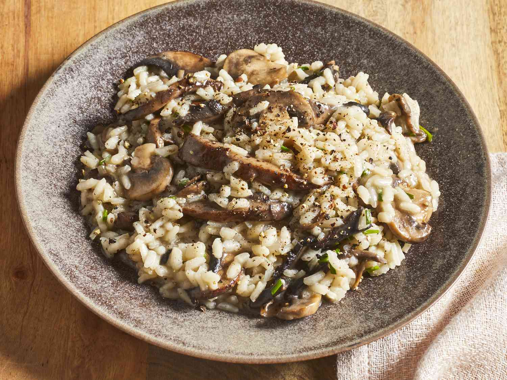

Ingredientes
- 200 g de arroz Arborio
- 1 cebolla picada
- 1 diente de ajo picado
- 1 taza de vino blanco
- 1 litro de caldo de pollo
- 50 g de queso parmesano rallado
- Mantequilla
Instrucciones
- Sofríe la cebolla y el ajo en mantequilla hasta que estén transparentes.
- Agrega el arroz y revuelve para que se tueste un poco.
- Agrega el vino blanco y deja evaporar.
- Incorpora el caldo de a poco, revolviendo constantemente hasta que el arroz esté al dente.
- Agrega el queso parmesano y mezcla bien.
- Sirve caliente.